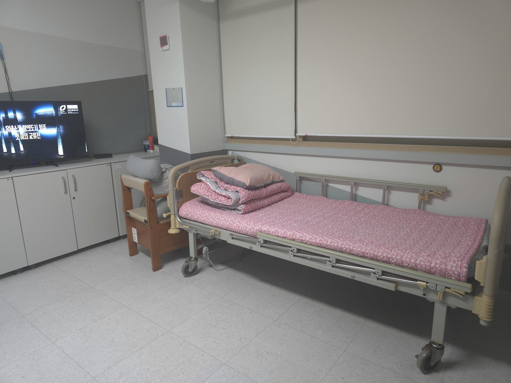
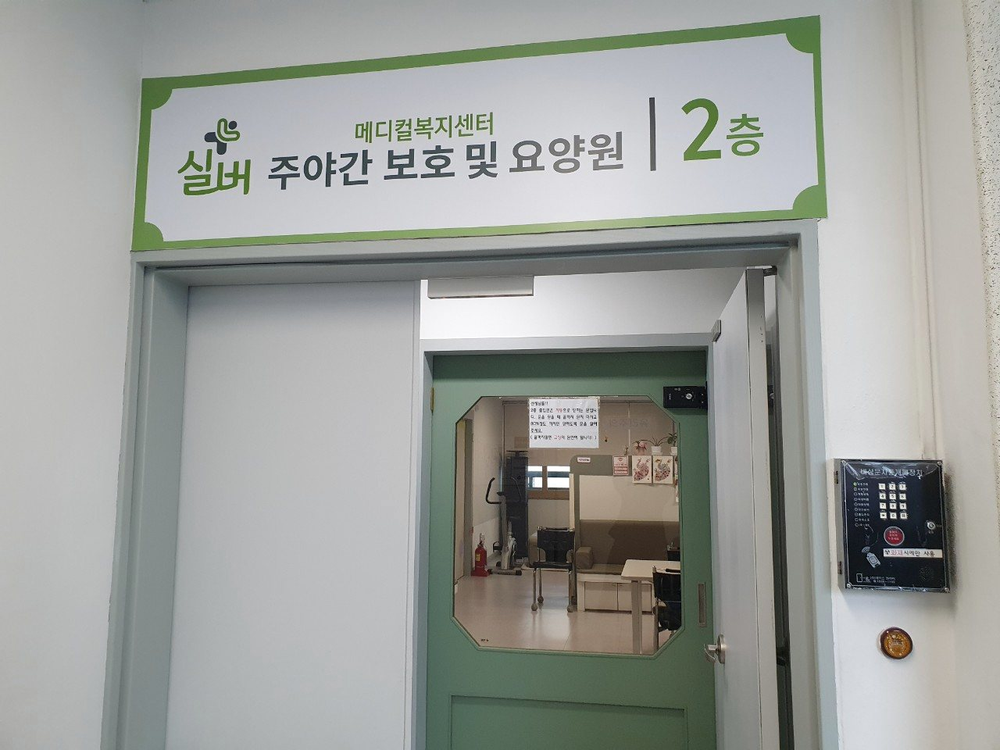

Care Services
필요한 돌봄을
함께 찾아드립니다
서비스 이름부터 정하기보다 어르신의 현재 생활과 가족의 돌봄 상황을 먼저 확인합니다.
상담의 시작
무엇을 이용할지보다 지금 어떤 도움이 필요한지부터 듣습니다
장기요양 서비스는 이용 장소와 시간, 어르신의 상태, 가족의 돌봄 가능 시간에 따라 선택이 달라질 수 있습니다. 전화 상담에서는 장기요양등급, 거동 상태, 인지 변화, 식사와 위생 지원 필요 여부를 먼저 확인합니다.
아래 내용은 서비스 이해를 돕는 일반 안내입니다. 실제 이용 가능 여부와 급여 범위는 개별 상담 및 관련 기준 확인이 필요합니다.
시설급여
요양원
가정에서 지속적인 돌봄이 어려운 어르신이 생활하며 일상 지원을 받는 서비스입니다.
상시 관찰과 생활 지원이 필요하거나 가족의 돌봄 부담이 장기간 이어지는 경우
식사, 위생, 이동, 휴식, 프로그램 등 일상생활 전반을 어르신 상태에 맞춰 지원
장기요양등급, 건강 상태, 복용 약, 식사 형태, 보호자 연락 체계와 입소 준비사항

재가급여
주간보호
낮 동안 센터에서 생활하며 가족의 돌봄 공백을 줄이고 규칙적인 일상을 돕는 서비스입니다.
낮 시간 혼자 계시기 어렵거나 식사와 활동, 안전 확인이 필요한 경우
센터 일정에 따른 식사, 휴식, 인지·여가 활동과 일상생활 지원
희망 이용 요일과 시간, 이동 방법, 건강 상태, 식사 및 배변 지원 필요 여부

재가급여
방문요양
요양보호사가 어르신 댁으로 방문하여 신체활동과 일상생활을 지원합니다.
익숙한 집에서 생활을 유지하면서 일정 시간 도움이 필요한 경우
개인위생, 식사, 이동, 주변 정돈 등 장기요양 인정 범위 안의 필요한 지원
필요 시간대, 주요 도움 내용, 주거 환경과 보호자 요청사항

재가급여
방문목욕
목욕에 도움이 필요한 어르신의 위생 관리와 안전한 목욕을 지원하는 서비스입니다.
거동이 불편해 가정에서 안전하게 목욕하기 어려운 경우
어르신 상태와 주거 환경을 확인한 뒤 인정 범위에 따라 목욕 지원
거동 상태, 목욕 환경, 피부 상태와 주의할 사항

단기 이용
단기보호
보호자의 출장, 입원, 휴식 등으로 돌봄 공백이 생길 때 일정 기간 이용을 상담할 수 있습니다.
일시적으로 가정 돌봄이 어렵거나 가족에게 회복과 휴식 시간이 필요한 경우
이용 기간 동안 식사, 위생, 안전, 휴식과 일상생활 지원
희망 기간, 이용 가능 여부, 준비물과 비용은 반드시 사전 상담 필요
통합 상담
통합재가
어르신의 생활 변화에 따라 필요한 재가 서비스를 함께 살펴보는 상담 방식입니다.
한 가지 서비스만으로는 돌봄 공백을 해결하기 어렵거나 상황 변화가 잦은 경우
가족 일정, 이용 가능 급여와 어르신의 상태를 종합해 가능한 서비스 조합을 검토
개별 이용 가능 범위는 장기요양 인정 내용과 관련 기준 확인 필요

이용 흐름
처음 문의부터 이용 준비까지
- 1전화·카카오 상담
등급과 현재 돌봄 상황을 알려주세요.
- 2서비스 방향 확인
필요한 이용 형태와 가능 여부를 살펴봅니다.
- 3방문·상세 상담
공간과 생활 방식, 비용과 준비사항을 확인합니다.
- 4서류·일정 준비
개별 상황에 맞춰 필요한 절차를 안내합니다.